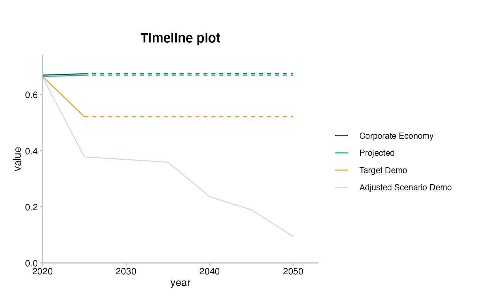
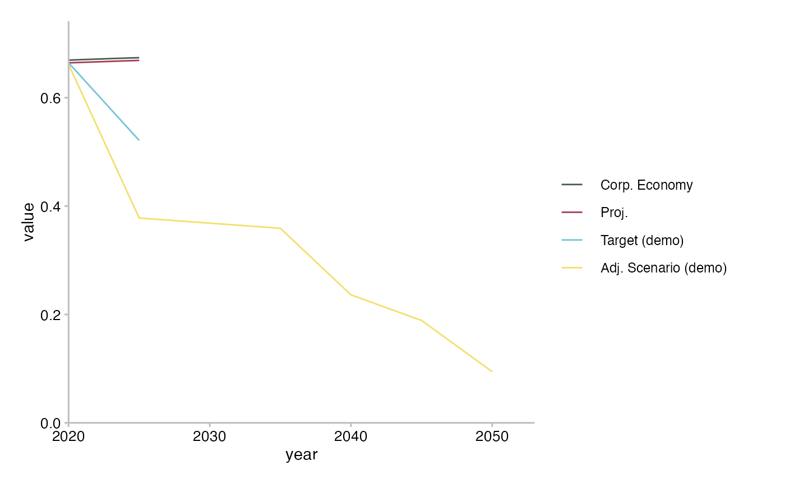
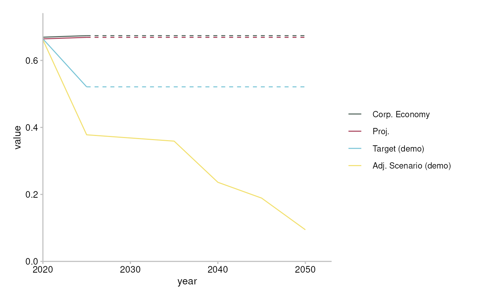
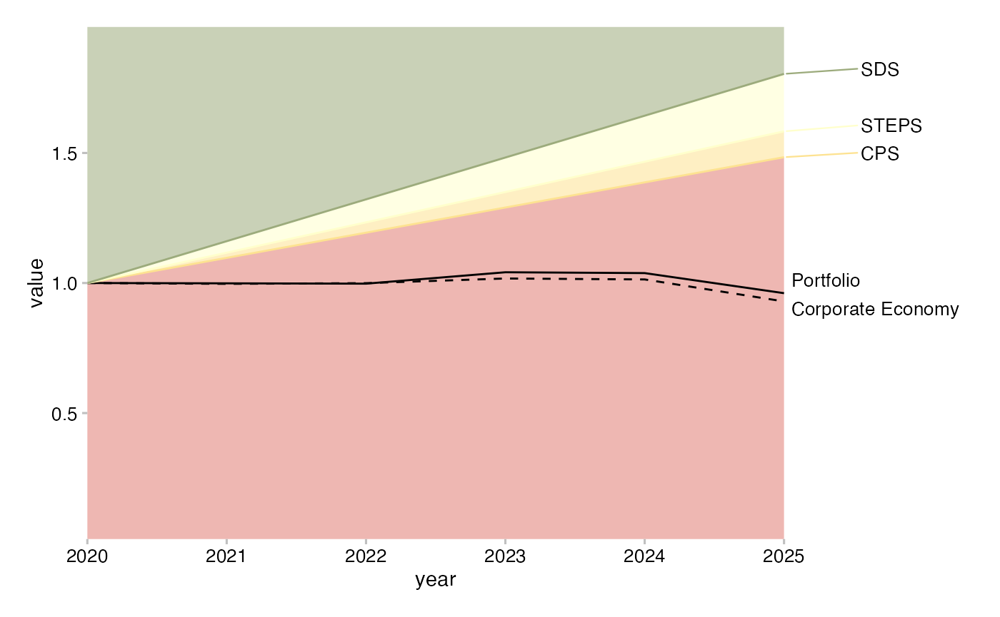

This article shows the “Y” API. It assumes you already read the article comparing the “X” and “Y” APIs.
The timeline plot uses sda-like data. First prepare it with prep_timelineY(), then plot it with plot_timelineY().
Use prep_timelineY() to prepare the data. You’ll need to subset the data to meet the requirements of the plot_timelineY(), which you can do with the argument sector_filter. If you forget, the error message should guide you.
# Fails
prep_timelineY(sda)
#> Error: `sector` must have a single value. It has: automotive, aviation, cement, oil and gas, shipping, coal, steel.
# Works
cement <- prep_timelineY(sda, sector_filter = "cement")
# Same
cement <- prep_timelineY(filter(sda, sector == "cement"))
cement
#> # A tibble: 29 x 7
#> sector year emission_factor_met… emission_factor_v… line_name value
#> <chr> <date> <chr> <dbl> <chr> <dbl>
#> 1 cement 2020-01-01 projected 0.664 projected 0.664
#> 2 cement 2021-01-01 projected 0.665 projected 0.665
#> 3 cement 2022-01-01 projected 0.666 projected 0.666
#> 4 cement 2023-01-01 projected 0.667 projected 0.667
#> 5 cement 2024-01-01 projected 0.668 projected 0.668
#> 6 cement 2025-01-01 projected 0.669 projected 0.669
#> 7 cement 2020-01-01 corporate_economy 0.669 corporate_ec… 0.669
#> 8 cement 2021-01-01 corporate_economy 0.670 corporate_ec… 0.670
#> 9 cement 2022-01-01 corporate_economy 0.671 corporate_ec… 0.671
#> 10 cement 2023-01-01 corporate_economy 0.672 corporate_ec… 0.672
#> # … with 19 more rows, and 1 more variable: extrapolated <lgl>plot_timelineY() defaults to recoding line_name to title case, and allows custom recoding and colour setting via a data frame passed to the argument specs.
# Default recoding
plot_timelineY(cement)
# Custom recoding
custom <- tribble(
~line_name, ~label, ~hex,
"projected", "Proj.", "#4a5e54",
"corporate_economy", "Corp. Economy", "#a63d57",
"target_demo", "Target (demo)", "#78c4d6",
"adjusted_scenario_demo", "Adj. Scenario (demo)", "#f2e06e",
)
plot_timelineY(cement, specs = custom)
The techmix plot uses market_share-like data. First prepare it with prep_techmixY(), then plot it with plot_techmixY(). prep_techmiY() includes a number of arguments that help you meet the data requirements of plot_techmixY().
data <- prep_techmixY(
market_share,
sector_filter = "power",
years_filter = c(2020, 2025),
region_filter = "global",
scenario_source_filter = "demo_2020",
scenario_filter = "sds",
value = "technology_share"
)
plot_techmixY(data)
The techmix plot uses market_share-like data. First prepare it with prep_trajectoryY(), then plot it with plot_trajectoryY(). As you may expect by now, prep_trajectoryY() includes arguments to meet the data requirements of plot_trajectoryY(). plot_trajectoryY() inputs a number of data frames which you can create with dplyr::tibble().
data <- prep_trajectoryY(
market_share,
sector_filter = "power",
technology_filter = "renewablescap",
region_filter = "global",
scenario_source_filter = "demo_2020",
value = "production"
)
scenario_specs <- tibble(
scenario = c("sds", "sps", "cps"),
label = c("SDS", "STEPS", "CPS")
)
main_line_metric <- tibble(metric = "projected", label = "Portfolio")
additional_line_metrics <- tibble(
metric = "corporate_economy",
label = "Corporate Economy"
)
plot_trajectoryY(
data,
scenario_specs_good_to_bad = scenario_specs,
main_line_metric = main_line_metric,
additional_line_metrics = additional_line_metrics
)
If you haven’t done so already, please see the article about the “X” API.